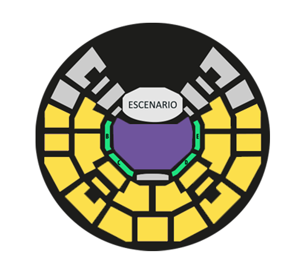

CANCHA
Permite estar en el primer nivel, cancha general y Dub Stage.
GALERIA
Permite estar en el segundo nivel, que incluye platea alta y baja.
PALCO
Recibirá una pulsera que les permitirá hacer uso de su espacio. Los palcos son con sillas, con capacidad para 32 personas. También se permite
estar en cancha general y Dub Stage.
* Sólo las entradas de cancha y palco permiten ingresar al Dub Stage
Todo niño/a de hasta 6 años (con carnet de identidad o certificado de nacimiento) entra gratis al festival en compañía de un adulto responsable
con su entrada. Evento para todo espectador.

Galería
Pre-venta 1: $10.000
Pre-venta 2: $14.000
Normal: $18.000
Cancha
Pre-venta 1: $10.000
Pre-venta 2: $16.000
Normal: $20.000
Palco
Pre-Venta: $20.000
Normal: $25.000
* Valores no incluyen cargo por servicio
El sistema Ticketek es el único autorizado para la venta de entradas.
Puedes comprar tus entradas para Siempre Vivo Reggae en todos los puntos de venta de Ticketek, los cuales se encuentran ubicados en Tiendas
Falabella y Cinehoyts a lo largo del país, venta online en www.ticketek.com y por Call Center: 2 690 2000
Consulta los puntos de venta AQUÍ
Sin recargo: (sólo pago en efectivo)
Tienda Rudeboys
Eurocentro – Ahumada #85 – Local #305 – Metro Universidad de Chile
Lun-Vie – 11-20 hrs.
Sábado – 11-16 hrs.
Advertencia: Ticketek es el único medio de venta oficial de entradas para Siempre Vivo Reggae. Plus Producciones LTDA y Ticketek no se hacen
responsables de entradas adquiridas fuera del sistema de venta oficial y puntos sin recargo antes mencionados, las cuales pueden ser
robadas, falsificadas o sus valores pueden encontrarse excesivamente más altos que los originales; perjudicando directamente al consumidor.
ANTES DE COMPRAR - REGÍSTRATE EN TICKETEK AQUÍ
PASO 1: INGRESA CON TU RUT Y CONTRASEÑA.
PASO 2: SELECCIONA TUS ENTRADAS (Ubicación y Cantidad).
PASO 3: FORMAS DE RETIRO.
Para las compras realizadas a través de internet existen 4 formas de entrega de entradas:
Envió a Domicilio $3.000
Retiro en lugar del evento $2.000
Retiro en Oficina $1.500
Envió fuera de Santiago $4.500
Consulta los puntos de venta AQUÍ.
PASO 4: FORMAS DE PAGO
En Puntos de Venta
Puedes comprar con efectivo, tarjeta de débito, crédito, tarjeta CMR Falabella.
Vía internet clientes Chilenos o Residentes
Botones de Pago: Tarjetas bancarias, CMR Falabella.
Webpay
Visa, MasterCard, Magna, Dinners, American Express.
Internet Extranjeros
Paypal y Webpay (tarjeta de crédito Visa, MasterCard, Magna, Dinners, American Express).
Retiro Tickets Para Compras Por Internet
Para todos los medios de pago quien debe registrarse en Ticketek es el titular de la tarjeta o cuenta corriente, y él es quién podrá retirar las
entradas.
Si el titular no puede retirar su entrada, quien lo haga debe presentar una fotocopia de la cédula de identidad de la persona que hizo la compra y un
poder simple extendido por el titular a la persona que recibe.
• Siempre Vivo Reggae es un festival familiar de música y cultura, cuyo objetivo es presentar un mix de bandas de reggae, ska, hip-hop y
otros estilos musicales afines, nacionales e internacionales, consagradas y emergentes. En consecuencia, al adquirir un ticket a Siempre Vivo
Reggae, el cliente está comprando la entrada a una experiencia musical y cultural de las características expresadas, no a un artista o banda
determinada.
• Cada año se presentan decenas de bandas, razón por la cual es posible que existan reprogramaciones y cancelaciones, los que serán oportunamente
informadas al público en los medios de comunicación oficial del festival, y en especial, en su página www.siemprevivoreggae.cl, por ende no
existirán devoluciones por cambios en los horarios de las presentaciones o cancelaciones de artistas. El evento no se cancelará por factores
climáticos.
• La autoridad policial encargada de resguardar el orden público podrá rechazar la entrada, o expulsar del recinto, a cualquier persona que no
cumpla con la Ley, con las normas aplicables al recinto o cuya conducta sea considerada ilegal, desordenada u ofensiva por dicha autoridad.
• Las personas que ingresen a las instalaciones acceden a ser registrados por la empresa de guardias de seguridad privada del evento con la
asistencia de la autoridad policial, en búsqueda de alcohol, sustancias ilegales, armas, fuegos artificiales, equipos de video o dispositivos de
grabación profesional o cualquier tipo de contrabando, los cuales están expresamente excluidos. Se entenderá por equipos de video o dispositivos de
grabación profesional: las cámaras de video en general, las cámaras fotográficas con lentes removibles y/o con zoom significativo, las cámaras
réflex, y los equipos profesionales de audio. En coherencia con lo anterior, no podrán ingresarse trípodes, selfie sticks u otros artefactos
similares.
• Si se le negara el acceso al recinto a alguna persona que portara algún objeto, cuyo ingreso está prohibido, pero cuyo carácter es lícito (por
ejemplo: una cámara réflex), se le permitirá a dicha persona la entrada al evento, si accede a no ingresar el objeto prohibido, otorgándosele el
tiempo necesario para ir a guardarlo.
• El reingreso al evento está siempre prohibido, es decir, una vez que la persona se retira o es expulsada de éste, no podrá volver a entrar al
recinto.
• Las personas a las que se les hubiere negado el ingreso al recinto o que se le hubiere expulsado de él, conforme a lo antes indicado, no tendrán
derecho a reembolso total o parcial del Ticket.
• La reventa o intento de reventa de Ticket no está permitida. Se entiende por reventa todo acto que tenga por objeto enajenar, comercializar,
vender o ceder a título oneroso una o más entradas o tickets al festival ya adquiridas anteriormente, a un precio superior al establecido por la
productora del evento.
• La entrada no podrá utilizarse para la promoción de publicidad (incluyendo concursos y sorteos), u otros fines comerciales, sin el consentimiento
expreso y por escrito de la productora.
• En el Festival Siempre Vivo Reggae se podrá grabar y transmitir a los asistentes en cualquier pantalla de video al interior del recinto, siempre y
cuando no se cause daño o detrimento a la persona. Sin perjuicio de lo anterior, si se usare la imagen de alguna persona para efectos exclusivamente
propagandísticos o lucrativos, y se identificase clara e inequívocamente a la persona, la productora deberá contar con autorización de ésta.
• No se admiten animales, con excepción de animales lazarillos o de servicio.
• En el evento que correspondiera la devolución del dinero pagado o la compensación total o parcial del valor del ticket o las indemnizaciones que
en derecho correspondiera, el afectado deberá dirigirse a la empresa Ticketek expresando la causa objetiva que justifique su petición, para lo cual,
debe escribir al correo serviciocliente@ticketek.cl. Ello, sin perjuicio de la eventual
responsabilidad de Plus Producciones LTDA.
Términos y condiciones: http://www.ticketek.cl/politicas_ticketek.pdf